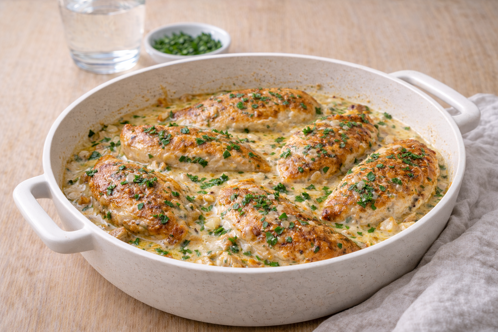

Kycklingfilé i ugn med vitlök och crème fraiche
Ugnsbakad kyckling med vitlök och crème fraiche. Enkelt, krämigt och perfekt vardagsrecept.

Ingredienser
- 600 g kycklingfilé
- 2 dl crème fraiche
- 2 vitlöksklyftor, pressade
- 1 tsk salt
- 1 krm svartpeppar
- 1 tsk paprikapulver (valfritt)
- 1 msk olja
Så lagar du
- Sätt ugnen på 200°C.
- Lägg kycklingen i en ugnsform. Salta och peppra.
- Blanda crème fraiche med vitlök (och ev. paprikapulver).
- Häll blandningen över kycklingen.
- Tillaga 20–25 minuter tills kycklingen är genomstekt.
- Servera med ris, potatis eller pasta och en sallad.
Tips & variationer
- Lägg i broccoli eller halverade tomater i formen för en komplett middag.
- Byt crème fraiche mot lättvariant om du vill sänka kalorierna.